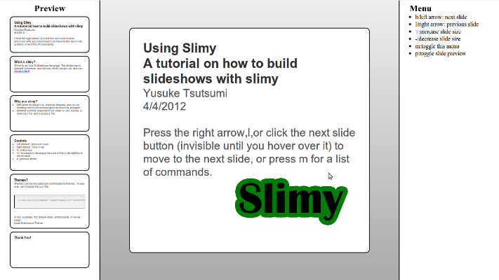

Slimy: another html5 slideshow

After seeing a coworker’s presentation completely done using html5 and javascript, I really realized how much of a platform that html5 can be. Effectively, it’s a ubiquitous platform by which any operating system can run code, with very little prior setup necessary. I really liked the concept of an html5 slideshow, so I looked around for one that suited my needs. There wasn’t one, so I began to write my own. I present Slimy:
http://code.google.com/p/slimy/
You can see an example here:
http://slimy.googlecode.com/git/example.html
I explored html5 slideshows quite a bit, and I had two main issues that got me interested in writing my own:
-
Every html5 slideshow I saw had online dependencies. I understand that the web is everywhere, but I still didn’t want to rule out situations where internet access is not readily available. Simply saving the slideshow locally with a browser was a viable option, but I preferred to also clutter my file system as little as possible.
-
The markup wasn’t always straightforward. I was recommended both the google html slideshow and rubyforge’s slideshow, but I didn’t like the idea of having to learn a different proprietary markup, especially when html is about as simple as markup gets.
-
The slideshows included little fixes to make up for css3 technologies that weren’t supported. I didn’t like this. I was looking for something that doesn’t sacrifice simplicity to try to make the code work for less standard-compliant or outdated browsers. My system works for the newest browsers, and I don’t imagine that changing.
Slimy focus’s on encapsulation of the slideshow, and also functionality. My main goal is to make it as functional as Google’s html5 slideshow, but much simpler and elegant. I aim to keep it that way by including as few proprietary functionality as possible, instead relying on css3 and javascript such as css transitions. I do require jquery, but I think it makes the functional code significantly more elegant and readable.
I would love to see some feedback, and I am willing to add more functionality as requests come in. So please, give slimy a shot! I have a feeling you’ll rarely use Powerpoint or any other slideshow application again.